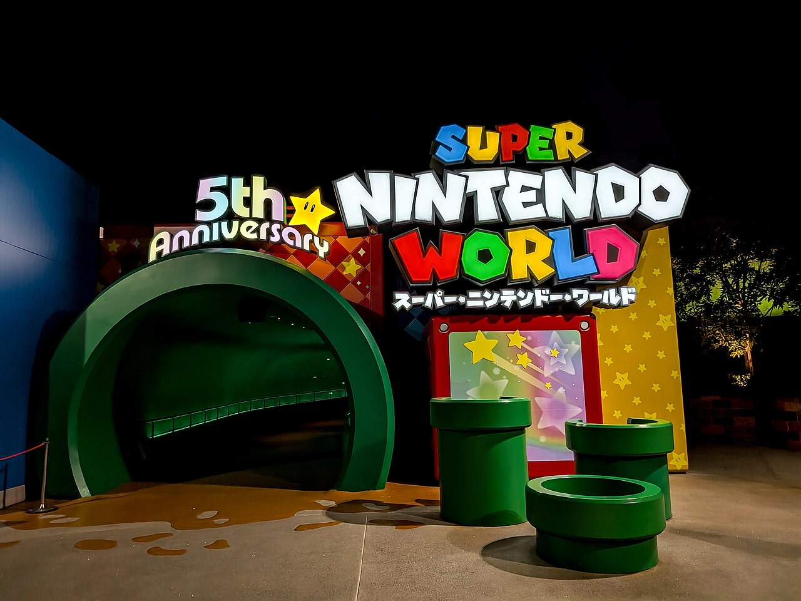

Universal Studios Japan's Nintendo land: you walk through a warp pipe and come out inside a life-size Mushroom Kingdom, question blocks and all. With Donkey Kong Country open since 2024, it's now nearly twice the size, and it's the best theme-park day in Japan for a gamer.



01Mario Kart: Koopa's Challenge
AR headset kart racing through Bowser's Castle, the flagship ride and worth any wait.
02Power-Up Bands
Wristbands that link to the app, punch real question blocks, collect coins and keys, and compete against each other. Dad vs Felix, obviously.
03Donkey Kong Country
The mine-cart coaster that appears to jump broken track, plus the whole jungle expansion.
04Yoshi's Adventure & Kinopio's Cafe
The slow scenic ride with the best views of the land, and lunch inside a giant mushroom.
05The rest of USJ
Harry Potter's Hogsmeade, Jurassic Park, Hollywood Dream coaster, a full park beyond the pipe.
Good to know
- Buy studio passes ahead, and strongly consider the Express Pass with timed Nintendo entry, August is peak season. On sale roughly 2 months out, so now.
- No Express Pass? Rope-drop: arrive before opening, go straight to Nintendo World, or grab a timed-entry slot in the app the moment you're through the gates.
- Power-Up Bands are bought in-park, one each, they keep your scores separate.